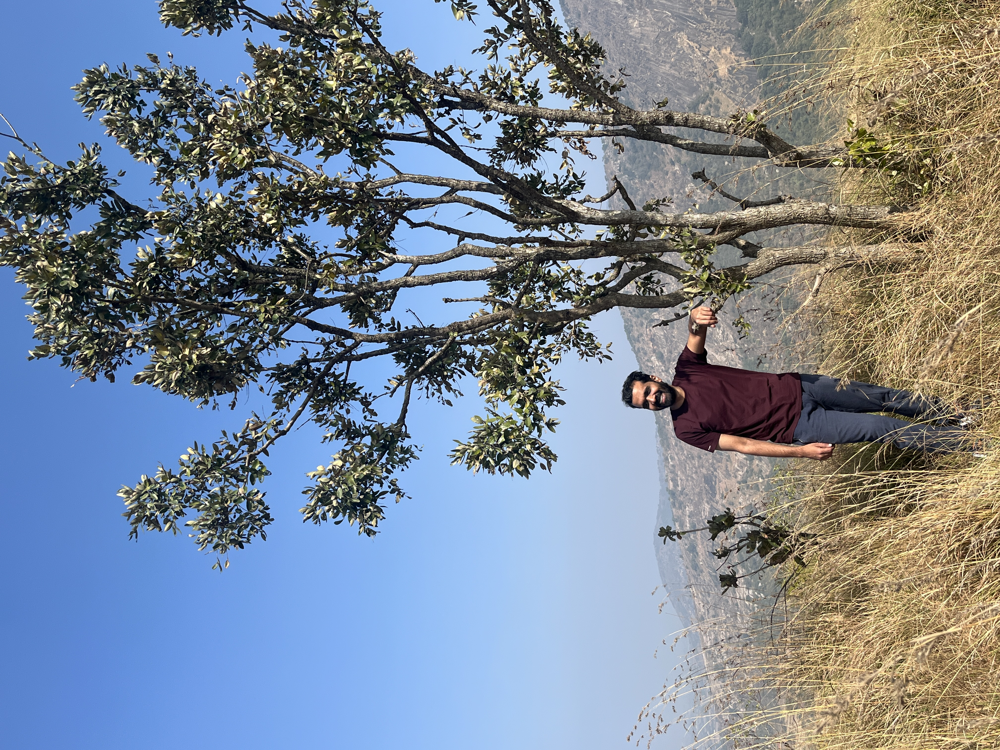

Srinivasa Sundara Rajan R
I hold a Master's degree in Microbiology, with research interests spanning
medical microbiology, translational diagnostics, biomarkers, bioinformatics,
and machine learning for infectious disease diagnosis.
My work focuses on the development of rapid and clinically relevant
diagnostic approaches for neurosurgical and central nervous system infections,
integrating molecular biology, biomarker discovery, computational analysis,
and next-generation sequencing (NGS).
I have contributed to multidisciplinary research across institutions including
CSIR-CECRI, ICMR–National Institute of Virology (NIV) during the COVID-19
pandemic, and currently at NIMHANS, where my work involves biomarker
discovery, metagenomics, machine learning, and diagnostic tool development
for post-neurosurgical meningitis.

Development and validation of cerebrospinal fluid (CSF) biomarkers, including presepsin, procalcitonin (PCT), and CSF lactate for rapid diagnosis of post-neurosurgical meningitis and CNS infections.
Next-generation sequencing (NGS) approaches for pathogen discovery in culture-negative neurosurgical infections, enabling rapid identification of difficult-to-detect microorganisms.
Development of reproducible bioinformatics workflows using DADA2 for microbiome and pathogen analysis, translated into Shiny applications for clinical and research use.
Integration of CSF biomarkers, microbiological variables, and clinical parameters to build machine learning models for rapid diagnosis and diagnostic stewardship in neurosurgical meningitis.
Design of point-of-care biosensor concepts for rapid biomarker detection alongside simplified graphical analysis tools and Shiny-based interfaces for scientific visualization.
Explore some of my recent publication which focuses on medical microbiology, biomarker and rapid diagnosis.
My current research at NIMHANS focuses on improving the diagnosis of post-neurosurgical meningitis and central nervous system infections through translational and computational approaches. This includes the identification and validation of cerebrospinal fluid (CSF) biomarkers for rapid diagnosis, pathogen discovery in culture-negative cases using next-generation sequencing (NGS), and the integration of bioinformatics and machine learning methods to support clinical decision-making. My broader goal is to develop clinically relevant, rapid, and scalable diagnostic solutions that can improve early detection and patient outcomes in neurosurgical infections.
Beyond research, I enjoy trekking, photography, science communication, and creative exploration through digital content creation. I have a strong interest in translating scientific ideas into accessible educational content and enjoy developing visual and multimedia resources related to science and technology. Outdoor exploration, travel, and photography provide both inspiration and balance to my research life, while movies continue to influence my creative perspective and curiosity.